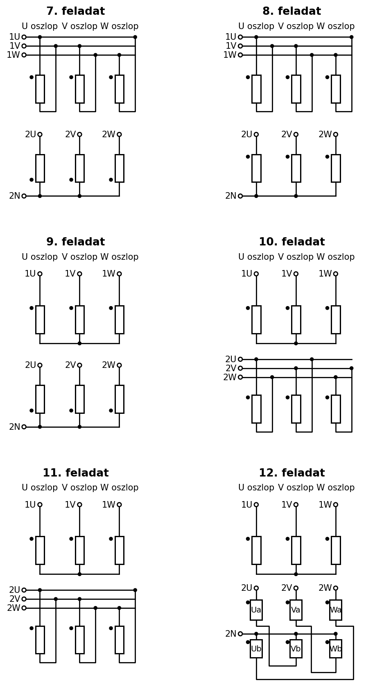

A kapcsolódó elmélet: tankönyv, 25.3 alfejezet.
Adott. Egy Dyn5 kapcsolási csoportú elosztótranszformátor:
Keresett. A nagy- és kisfeszültségű oldali névleges vonali áram.
Képlet. Háromfázisú rendszerben a látszólagos teljesítmény:
ahol a vonali feszültség, a vonali áram. Ebből:
Behelyettesítés.
Nagyfeszültségű oldal:
Kisfeszültségű oldal:
Ellenőrzés. Az áttétel . A névleges áramok aránya fordított: . A két oldal áramaránya megegyezik az áttétellel, tehát a számítás helyes. ∎
Adott. Egy transzformátor kapcsolási csoportja Yd11.
Keresett. A kisfeszültségű oldali vonali feszültség fáziseltérése a nagyfeszültségű oldalhoz képest.
Képlet. Az óraszám , az eltérés szöge:
Behelyettesítés. :
A 330°-os késés egyenértékű 30°-os sietéssel, ezért az Yd11 csoportban a kisfeszültségű oldali vonali feszültség 30°-ot siet a nagyfeszültségű oldalhoz képest. Megjegyzés. A szabványos óraszám mindig késést ad meg, de a 330°-os késés ugyanazt a vektort jelenti, mint a 30°-os sietés; a megfogalmazásnál a szabványos értelmezést használjuk. ∎
Hibás elképzelés. Valaki azt gondolja, hogy két azonos feszültségű és teljesítményű transzformátor párhuzamosan kapcsolható, ha mindkettő 10/0,4 kV-os. Ez téves.
Indoklás. Párhuzamos üzemben a két transzformátor primer és szekunder kapcsai azonos fázisú feszültségre kerülnek. Ha a kapcsolási csoportjuk eltérő, például az egyik Dyn5, a másik Yy0, akkor a szekunder feszültségeik között 150°-os fáziseltérés van, ami azonos nagyságú fázisfeszültségeknél kb. 444 V feszültségkülönbséget jelent (lásd az 5. feladatot). Ez a két szekunder oldal között nagy köráramot hajt, amely már üresjárásban is túlterhelheti a tekercseket, és pillanatszerűen tönkreteheti a transzformátorokat. A kapcsolási csoportnak azonosnak kell lennie (vagy azonos óraszámúnak), és emellett a feszültségáttételnek és a rövidzárási feszültségnek is össze kell illenie.
Adott (az adattábla-ábra példa-transzformátora): , 20 kV / 0,4 kV, Dyn5, .
Tanulság. A méréskor (lásd Transzformátor- és gépmérések (tankönyv, 41.3)) a vonali feszültségek aránya 50, a tekercsellenállás- és menetszámadatok viszont a 86,6-es tekercsáttétellel értelmezhetők.
1. feladat (A)
Írd le szavakkal a Yzn5 kapcsolási csoport jelölését:
melyik oldal milyen kapcsolású, van-e nullavezető, és mekkora a
fáziseltérés?
2. feladat (A)
Hány fokos késést jelent a Dyn11 óraszám? Ábrázold ezt
az óratárcsán vektorokkal.
3. feladat (B)
Egy Dyn5 transzformátor névleges adatai:
,
,
.
Számítsd ki mindkét oldal névleges vonali áramát, és ellenőrizd az
áttétellel.
4. feladat (B)
Adott egy háromfázisú transzformátor kapcsolási rajza: a primer oldalon
a tekercsek csillagban vannak, a szekunder oldalon deltában. A
nagymutató a nagyfeszültségű oldali vonali feszültséget jelképezi, a
kismutató 11 órán áll. Írd fel a kapcsolási csoport jelét, és mondd meg
a szekunder fáziseltérést.
5. feladat (C)
Két transzformátort akarnak párhuzamosan üzemeltetni. Az egyik
Dyn5, a másik Yyn0, mindkettő 10/0,4
kV, 630 kVA. Magyarázd el, miért tilos a párhuzamos kapcsolás, és mi
történne, ha mégis megtennék. Válaszodban számítsd ki a két szekunder
oldal közötti feszültségkülönbség nagyságát is, feltételezve, hogy a
primer oldalak azonos feszültségre vannak kötve, és a fázisfeszültségek
azonos nagyságúak.
6. feladat (D)
Egy trafóállomásban a szerelő mérést végez. Azt méri, hogy a
kisfeszültségű oldalon a fázissorrend L1, L2, L3, és a 2N nullavezetőn
,
ha a három fázis árama kiegyenlített. Ezután az L1 fázisra egy
,
a másik két fázisra
terhelést kapcsol. Mekkora áram folyik ilyenkor a nullavezetőn, ha a
terhelés ohmos? Magyarázd el, miért fontos ez a Dyn5
transzformátornál.
Biztonsági korlát. Trafóállomásban csak jogosult, kioktatott személy dolgozhat; a mérés lakatfogóval (legalább CAT IV besorolású műszerrel), a feszültség alatti részek megérintése nélkül történik; tanulóként a feladatot számítási feladatként oldd meg.
A 7–12. feladat rajzain három oszlop (U, V, W) látszik, felül a primer, alattuk a szekunder tekercs (a 12. feladatban két féltekercs); a pont a tekercskezdet. Határozd meg a kapcsolási csoportot az öt lépés (tankönyv, 25.3) szerint: kapcsolás, csillagpont, óraszám.

7. feladat (A). Az ábra 7. rajza: mi a kapcsolási csoport?
8. feladat (A). Az ábra 8. rajza: mi a kapcsolási csoport, és miben tér el a 7. rajztól?
9. feladat (B). Az ábra 9. rajza: mi a kapcsolási csoport?
10. feladat (B). Az ábra 10. rajza: írd le a szekunder bekötést (melyik tekercs mely kapcsok között ül), és add meg a csoportot.
11. feladat (B). Az ábra 11. rajza: írd le a szekunder bekötést, és add meg a csoportot.
12. feladat (C). Az ábra 12. rajza: add meg a csoportot. Mi lenne a csoport, ha mind a hat féltekercset fordítva kötnéd be?
13. feladat (C). „Csoportból rajz”: a fejezet eleji Dyn5 rajzból kiindulva rajzold meg a Dyn11 szekunder bekötését.
14. feladat (D). Egy Dyn5 transzformátor egyik szekunder tekercsét (W oszlop) fordítva kötötték be. Mit mérsz üresjárásban a kisfeszültségű oldalon, ha a helyes értékek 400 V vonali és 230 V fázisfeszültség? Üzembe vehető-e? (Számítási feladat: a mérés csak jogosult személy munkája.)
15. feladat (B). Egy 400 kVA-es, 10/0,4 kV-os, Dyn5 transzformátor . Számítsd ki a primer vonali áramot, a primer tekercsáramot, a menetszám-áttételt és a kapocszárlati áramot merev hálózaton.
A Yzn5 jelentése:
A Dyn11 óraszám 11 · 30° = 330°. Ez a kisfeszültségű oldali vonali feszültség 330°-os késését jelenti, ami vektoriálisan 30°-os sietés. Az óratárcsán a nagy mutató a 12-nél, a kis mutató a 11-esnél áll.
Adott. , , .
Keresett. és .
Képlet: .
Nagyfeszültségű oldal:
Kisfeszültségű oldal:
Ellenőrzés. Az áttétel . Az áramok aránya , tehát a számítás helyes. ∎
A primer oldal csillag (Y), a szekunder delta (d). Az óraszám 11. Ha a szekunder oldalon nincs kivezetett nullavezető (delta), akkor a jelölés Yd11. A szekunder vonali feszültség 330°-ot késik a primerhez képest (vagy 30°-ot siet).
Adott. T1: Dyn5, T2: Yyn0, mindkettő 10 kV / 0,4 kV, 630 kVA.
Kérdés. Miért tilos párhuzamosan kapcsolni?
A párhuzamos üzemhez azonos kapcsolási csoport szükséges. Itt az óraszámok különböznek: T1 szekunder feszültsége 150°-ot késik, T2 szekunder feszültsége 0°-ot késik a primerhez képest. A két szekunder oldal közötti fáziseltérés 150°. Ha a primer oldalakat azonos feszültségre kötjük, a szekunder oldalak közötti feszültségkülönbség közelítőleg:
ahol a szekunder fázisfeszültség 230 V, :
Ez a 444 V a két szekunder oldal közötti kis impedancián keresztül záródik, ami már üresjárásban is a névlegesnél jóval nagyobb köráramot hajthat. A transzformátorok és a kapcsolókészülékek azonnal tönkremehetnek. Ezért a párhuzamos kapcsolás tilos, amíg a kapcsolási csoportok azonosak nem lesznek. ∎
Adott. , , , a terhelés ohmos, tehát a fázisáramok fázisszögei megegyeznek a feszültségekével.
Keresett. A nullavezető árama .
Négyvezetékes (csillagpontos) rendszerben a nullavezetőben a fázisáramok vektori összege folyik:
Mivel a másik két áram nulla:
Tehát a nullavezetőn ugyanakkora áram folyik, mint az egyetlen terhelt fázison. Ez rávilágít arra, hogy erősen aszimmetrikus terhelésnél a nullavezetőt ugyanolyan keresztmetszetre kell méretezni, mint a fázisvezetőket, vagy akár nagyobbra, ha a harmonikus áramok is jelen vannak. A Dyn5 transzformátor jól tűri az ilyen terhelést, de a szerelőnek biztosítania kell, hogy a nullavezető és a csillagpont bekötése megfelelő legyen. ∎
| Feladat | Bekötés | Csoport |
|---|---|---|
| 7. | primer delta; szekunder csillag, a pontozott végek a 2N-en | Dyn5 |
| 8. | mint a 7., de a pontozott végek a kapcsokon (a szekunder tekercsek megfordítva: +6 óra) | Dyn11 |
| 9. | primer csillag, pontok a kapcsokon; szekunder csillag, pontok a 2N-en | Yyn6 (a nullapont nélkül Yy6) |
| 10. | primer csillag; U oszlop 2U(•)–2W, V 2V(•)–2U, W 2W(•)–2V | Yd11 |
| 11. | primer csillag; U oszlop 2U(•)–2V, V 2V(•)–2W, W 2W(•)–2U | Yd1 |
| 12. | primer csillag; szekunder zegzug: 2N → Vb → Ua → 2U (ciklikusan) | Yzn11; mind a hat féltekercs megfordítva Yzn5 |
13. feladat. A primer delta változatlan. A három szekunder tekercset megfordítod: a pontozott vég kerül a 2U, 2V, 2W kapocsra, a pont nélküli végek alkotják a 2N csillagpontot – ez az ábra 8. rajza. A 2U fázisfeszültség így irányú, a késés 330°, az óraszám 11.
14. feladat. A fázisfeszültségek nagysága nem változik: 2U–2N, 2V–2N és 2W–2N egyaránt 230 V. A megfordított W fázis azonban 180°-kal elfordul, ezért a vonali feszültségek: 2U–2V = 400 V, 2V–2W ≈ 230 V, 2W–2U ≈ 230 V (a két érintett vonali feszültség a 60°-os fázorszög miatt ). A két „rövid” vonali feszültség árulkodik a hibáról; a transzformátort így üzembe venni tilos.
15. feladat. ; primer tekercsáram (delta) ; ; , .
Példa. A Dyn5 jel azt jelenti:
Hasonlóan Yzn5 jelentése: nagy oldal csillag, kis oldal zegzug, kivezetett nullavezetővel, 150°-os késés; Yy0 jelentése: mindkét oldal csillag, nincs kivezetett nullavezető, és a fáziseltérés 0°.